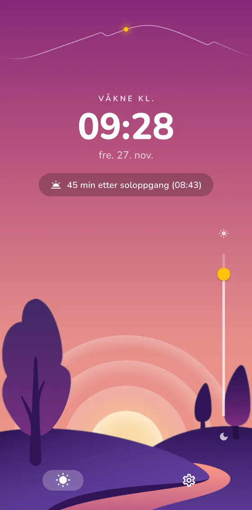

Soloppgangen flytter seg litt hver dag. Det bør alarmen din også gjøre. Wake at Sunrise beregner morgendagens soloppgang for akkurat der du er og ringer i det øyeblikket – eller så mange minutter før eller etter som passer deg.

Slik fungerer det
Appen må vite hvor på jorden du våkner. Det er det eneste den spør om – og det blir på telefonen din.
Ring akkurat ved soloppgang, eller noen minutter før eller etter. Velg hvilke ukedager alarmen skal være på.
Hver natt retter alarmen seg stille inn mot morgendagens soloppgang. Når morgengryet flytter seg gjennom året, flytter vekketiden din seg med.
Funksjoner
Én oppgave – å vekke deg ved daggry – gjort med omhu.
Ikke et gjennomsnitt for byen – det faktiske soloppgangstidspunktet der telefonen din er, beregnet på enheten med astronomisk matematikk.
Fortell hvor mye søvn du vil ha og hvor lang tid du trenger til å roe ned. Den regner baklengs fra morgendagens soloppgang og minner deg på å legge deg i tide.
Et diagram over hvordan soloppgangen forskyver seg gjennom hele året – med et punkt på i dag – så du vet hvor morgenene dine er på vei.
Ringer over låseskjermen, overlever omstarter og kan overstyre systemvolumet, så en dempet telefon ikke betyr en forsovet morgen.
Ingen værtjeneste, ingen server. Soloppgangen beregnes lokalt, så alarmen virker i flymodus og langt fra allfarvei.
Fullt oversatt, og slumretid, volum og ukedager kan stilles inn.
Personvern
Den eneste tillatelsen av betydning som appen ber om, er posisjon – og den brukes til nøyaktig én ting: å beregne soloppgangen der du er.
Tidlig tilgang
Wake at Sunrise starter snart en lukket beta på Android. Bli med i testgruppen, så får du installasjonslenken i det øyeblikket den åpner.
Bli med i testgruppenGratis, ingenting å kjøpe. Bruk Google-kontoen du skal installere med – det er slik Google Play vet at appen skal vises for deg.
Tidlig tilgang
Wake at Sunrise er i lukket beta på Android. To raske steg, så er den din – tilbakemeldingene dine former lanseringen.
Google Play må ha kontoen din på testlisten før appen vises for deg. Allerede med? Hopp til steg 2.
Bli med i gruppenÅpne dette på telefonen du skal teste med, logget på den samme Google-kontoen.
Åpne testen på Google PlayTestingen er gratis, og det er ingenting å kjøpe. Behold gjerne appen installert i et par uker – Google teller hvor mange som tester sammenhengende før en ny app får gå live.
Last ned
Wake at Sunrise finnes på Google Play. Gratis, ingen reklame, ingen konto.
Last ned fra Google PlayTidlig tilgang
Wake at Sunrise avslutter en lukket beta på Android. Vil du være med? Send en kort e-post, så får du lenken.
Be om betalenken